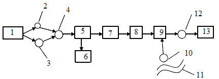
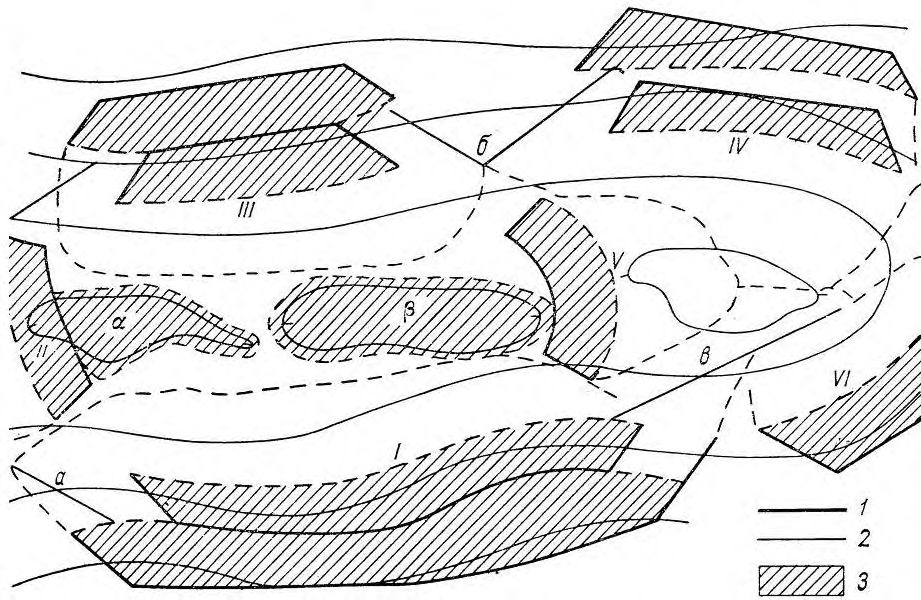
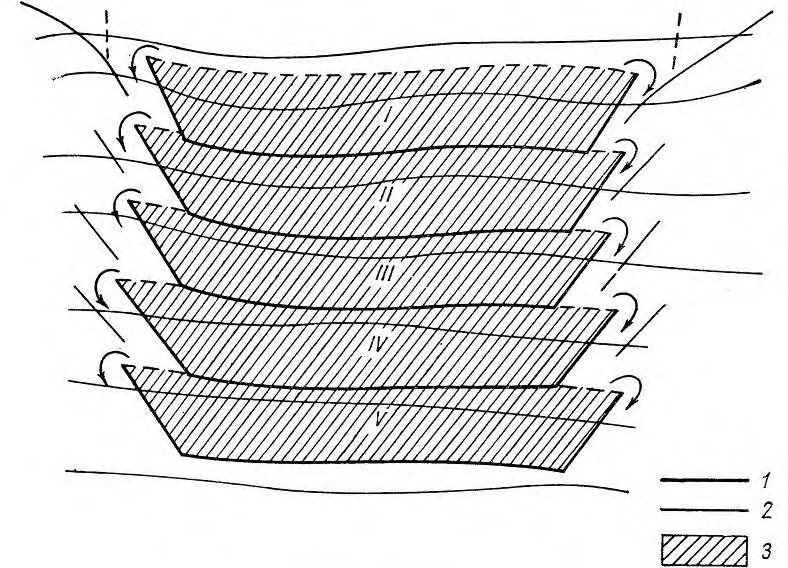
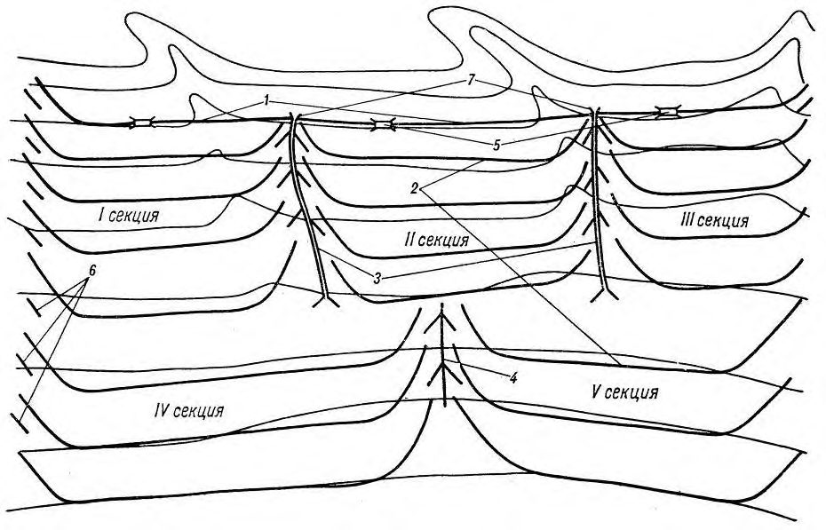

СП 100.13330.2016 «Мелиоративные системы и сооружения»
О документе: разработчики, утверждение, регистрация, ключевые слова
СВОД ПРАВИЛ СП 100.13330.2016
Актуализированная редакция
СНиП 2.06.03-85
Москва 2016
1 ИСПОЛНИТЕЛЬ - ФГБНУ «РосНИИПМ»
2 ВНЕСЕН Техническим комитетом по стандартизации ТК 465 «Строительство»
3 ПОДГОТОВЛЕН К УТВЕРЖДЕНИЮ Департаментом градостроительной деятельности и архитектуры Министерства строительства и жилищно-коммунального хозяйства Российской Федерации (Минстрой России)
4 УТВЕРЖДЕН Приказом Министерства строительства и жилищно-коммунального хозяйства Российской Федерации от 16 декабря 2016 г. № 953/пр и введен в действие с 17 июня 2017 г.
5 ЗАРЕГИСТРИРОВАН Федеральным агентством по техническому регулированию и метрологии (Росстандарт). Пересмотр СП 100.13330.2011 «СНиП 2.06.03-85 Мелиоративные системы и сооружения»
В случае пересмотра (замены) или отмены настоящего свода правил соответствующее уведомление будет опубликовано в установленном порядке. Соответствующая информация, уведомление и тексты размещаются также в информационной системе общего пользования - на официальном сайте разработчика (Минстрой России) в сети Интернет
© Минстрой России, 2016
Настоящий нормативный документ не может быть полностью или частично воспроизведен, тиражирован и распространен в качестве официального издания на территории Российской Федерации без разрешения Минстроя России
СП 100.13330.2016
Дата введения 20\_\_-\_\_-\_\_
УДК 626.82
ОКС 93.160
Ключевые слова: проектирование, оросительная система, осушительная система, сооружения на сети, дренаж, насосная станция, польдерная система, дамба, ка- нал, дорога, водоприемник
Директор НИИСФ РААСН
И. Л. Шубин
Руководитель организации-разработчика
ФГБНУ «РосНИИПМ»
Директор
В. Н. Щедрин
Руководитель
разработки
В. Н. Щедрин
Исполнители
Зам. директора
С. М. Васильев
Нач. отдела
В. В. Слабунов
Нач. отдела
А. В. Акопян
Вед. науч. сотр.
О. В. Воеводин
Вед. науч. сотр.
А. С. Штанько
Ст. науч. сотр.
А. Л. Кожанов
Ст. науч. сотр.
С. Л. Жук
Введение
Настоящий свод правил разработан с учетом требований Федерального закона от 30 декабря 2009 г. № 384-ФЗ «Технический регламент о безопасности зданий и сооружений» [1], Федерального закона от 10 января 1996 г. № 4-ФЗ «О мелиорации земель» [2], Федерального закона от 27 декабря 2002 г. № 184-ФЗ «О техническом регулировании» [3], положений действующих строительных норм и сводов правил.
Актуализация выполнена авторским коллективом ФГБНУ «РосНИИПМ»: д-р техн. наук, проф., акад. РАН В. Н. Щедрин , докт. техн. наук, доц. С. М. Васильев , канд. техн. наук В. В. Слабунов , канд. с.-х. наук О. В. Воеводин , канд. техн. наук А. С. Штанько , канд. техн. наук А. В. Акопян , канд. техн. наук А. Л. Кожанов , канд. техн. наук С. Л. Жук .
В настоящем своде правил учтены опыт исследований в данной области отечественных и зарубежных специалистов: Б. Б. Шумаков , Б. С. Маслов , М. С. Григоров , И. П. Кружилин , В. Д. Гостищев , И. П. Айдаров , В. И. Ольгаренко , Ю. П. Поляков , П. Г.Фиалковский , Е. И. Кормыш , Г. И. Неугодов , Р. М. Фильрозе , П. А. Полад-Заде и др.
СП 100.13330.2016
| [7] СП 11-102-97 | Инженерно-экологические изыскания для стро- ительства |
|---|---|
| [8] СП 11-103-97 | Инженерно-гидрометеорологические изыскания для строительства |
| [9] СП 11-104-97 | Инженерно-геодезические изыскания для строи- тельства |
| [10] СП 33-101-2003 | Определение основных расчетных гидрологиче- ских характеристик |
| [11] ВСН 33-2.1.05-90 | Гидромелиоративные системы и сооружения. Гидрогеологические и инженерно-геологиче- ские изыскания |
| [12] ВСН 33-2.1.07-87 | Инженерно-геодезические изыскания для мели- оративного и водохозяйственного строительства |
| [13] ВСН 33-2.1.10-90 | Гидромелиоративные системы и сооружения. Инженерно-гидрометеорологические изыскания |
| [14] ВСН 33-2.2.03-86 | Мелиоративные системы и сооружения. Дренаж |
| [15] ВСН 33-2.2.12-87 | Мелиоративные системы и сооружения. Насос- ные станции. Нормы проектирования |
|---|---|
| [16] СН 474-75 | Нормы отвода земель для мелиоративных кана- лов |
| [17] ОСТ 10-238-99 | Система проектной документации мелиоратив- ного и водохозяйственного строительства. Пра- вила выполнения рабочей документации гидро- технических сооружений |
| [18] НТП-АПК 1.30.03.01-06 | Нормы технологического проектирования оро- сительных систем с использованием животно- |
| [19] НТП-АПК 1.30.03.02-06 | водческих стоков Нормы технологического проектирования оро- сительных систем с использованием сточных |
| [20] РД-АПК 1.10.15.02-08 | Методические рекомендации по технологиче- скому проектированию систем удаления и под- готовки к использованию навоза и помета от 29.04.2008 №1.10.15.02-08 |
1Область применения
2Нормативные ссылки
В настоящем своде правил приведены ссылки на следующие нормативные документы:
ГОСТ 9.602-2005 Единая система защиты от коррозии и старения (ЕСЗКС). Сооружения подземные. Общие требования к защите от коррозии
ГОСТ 12.2.063-2015 Арматура трубопроводная. Общие требования безопасности
ГОСТ 17.1.2.03-90 Охрана природы. Гидросфера. Критерии и показатели качества воды для орошения
The reclamation systems and construction
ГОСТ 34.201-89 Информационная технология. Комплекс стандартов на автоматизированные системы. Виды, комплектность и обозначение документов при создании автоматизированных систем
ГОСТ 6482-2011 Трубы железобетонные безнапорные. Технические условия
ГОСТ 8411-74 Трубы керамические дренажные. Технические условия
ГОСТ 10650-2013 Торф. Методы определения степени разложения
ГОСТ 20054-82 Трубы бетонные безнапорные. Технические условия
ГОСТ 21509-76 Лотки железобетонные оросительных систем. Технические условия
ГОСТ 23899-79 Колонны железобетонные под параболические лотки. Технические условия
ГОСТ 23972-80 Фундаменты железобетонные для параболических лотков. Технические условия
ГОСТ 31416-2009 Трубы и муфты хризотилцементные. Технические условия
ГОСТ Р 21.1101-2013 Система проектной документации для строительства. Основные требования к проектной и рабочей документации
ГОСТ Р 22.1.12-2005 Безопасность в чрезвычайных ситуациях. Структурированная система мониторинга и управления инженерными системами зданий и сооружений. Общие требования
ГОСТ Р 51657.2-2000 Водоучет на гидромелиоративных и водохозяйственных системах. Методы измерения расхода и объема воды. Классификация
ГОСТ Р 51657.3-2000 Водоучет на гидромелиоративных и водохозяйственных системах. Гидрометрические сооружения и устройства. Классификация
ГОСТ Р 51657.4-2002 Водоучет на гидромелиоративных и водохозяйственных системах. Измерение расходов воды с использованием водосливов с треугольными порогами. Общие технические требования
ГОСТ Р 53201-2008 Трубы стеклопластиковые и фитинги. Технические условия
ГОСТ Р 54475-2011 Трубы полимерные со структурированной стенкой и фасонные части к ним для систем наружной канализации. Технические условия ГОСТ ИСО 9261-2004 Оборудование сельскохозяйственное оросительное.
Трубопроводы для полива. Технические требования и методы испытаний СП 22.13330.2011 «СНиП 2.02.01-83 Основания зданий и сооружений»
СП 23.13330.2011 «СНиП 2.02.02-85 Основания гидротехнических сооружений»
СП 28.13330.2012 «СНиП 2.03.11-85 Защита строительных конструкций от коррозии»
СП 31.13330.2012 «СНиП 2.04.02-84 Водоснабжение. Наружные сети и сооружения»
СП 34.13330.2012 «СНиП 2.05.02-85 Автомобильные дороги»
СП 35.13330.2011 «СНиП 2.05.03-84 Мосты и трубы»
СП 38.13330.2012 «СНиП 2.06.04-82 Нагрузки и воздействия на гидротехнические сооружения (волновые, ледовые и от судов)»
СП 39.13330.2012 «СНиП 2.06.05-84 Плотины из грунтовых материалов»
СП 40.13330.2012 «СНиП 2.06.06-85 Плотины бетонные и железобетонные»
СП 47.13330.2012 «СНиП 11-02-96 Инженерные изыскания для строительства. Основные положения»
СП 56.13330.2011 «СНиП 31-03-2001 Производственные здания»
СП 58.13330.2012 «СНиП 33-01-2003 Гидротехнические сооружения. Основные положения»
СП 77.13330.2011 «СНиП 3.05.07-85 Системы автоматизации»
СП 99.13330.2011 «СНиП 2.05.11-83 Внутрихозяйственные автомобильные дороги в колхозах, совхозах и других сельскохозяйственных предприятиях и организациях»
СП 101.13330.2012 «СНиП 2.06.07-87 Подпорные стены, судоходные
СП 100.13330.2016 шлюзы, рыбопропускные и рыбозащитные сооружения»
СП 104.13330.2011 «СНиП 2.06.15-85 Инженерная защита территории от затопления и подтопления»
СП 119.13330.2012 «СНиП 32-01-95 Железные дороги колеи 1520 мм»
СанПиН 2.1.5.980-00 Гигиенические требования к охране поверхностных вод
СанПиН 2.1.7.573-96 Гигиенические требования к использованию сточных вод и их осадков для орошения и удобрения
Примечание - При пользовании настоящим сводом правил целесообразно проверить действие ссылочных документов в информационной системе общего пользования - на официальном сайте федерального органа исполнительной власти в сфере стандартизации в сети Интернет или по ежегодному информационному указателю «Национальные стандарты», который опубликован по состоянию на 1 января текущего года, и по выпускам ежемесячного информационного указателя «Национальные стандарты» за текущий год. Если заменен ссылочный документ, на который дана недатированная ссылка, то рекомендуется использовать действующую версию этого документа с учетом всех внесенных в данную версию изменений. Если заменен ссылочный документ, на который дана датированная ссылка, то рекомендуется использовать версию этого документа с указанным выше годом утверждения (принятия). Если после утверждения настоящего свода правил в ссылочный документ, на который дана датированная ссылка, внесено изменение, затрагивающее положение, на которое дана ссылка, то это положение рекомендуется применять без учета данного изменения. Если ссылочный документ отменен без замены, то положение, в котором дана ссылка на него, рекомендуется применять в части, не затрагивающей эту ссылку. Сведения о действии сводов правил целесообразно проверить в Федеральном информационном фонде технических регламентов и стандартов.
3Термины и определения
В настоящем своде правил применены следующие термины с соответствующими определениями:
- 3.1аппарат дождевальный
- Устройство с подвижными частями для получения и распределения искусственного дождя по площади полива.
- 3.2борозда мелиоративная
- Временный канал мелиоративной сети, прокладываемый на поле и проходимый для сельскохозяйственных машин.
- 3.3водоприемник мелиоративной сети
- Водоток, водоем, понижение рельефа местности и (или) зона неполного водонасыщения горных пород, используемые для сброса в них дренажных и (или) возвратных оросительных вод.
- 3.4дождевание
- Орошение искусственным дождем.
- 3.5дождевание импульсное
- Дождевание в импульсном режиме.
- 3.6дрена кротовая
- Мелиоративная дрена в виде цилиндрической полости в почвогрунте.
- 3.7дрена ловчая
- Мелиоративная дрена оградительной осушительной сети, предназначенная для перехвата притока подземных вод к осушаемым землям.
- 3.8дрена мелиоративная
- Элемент регулирующей мелиоративной сети для сбора и отвода поверхностных и подземных вод.
- 3.9дрена нагорная
- Мелиоративная дрена оградительной осушительной сети, предназначенная для перехвата поверхностного стока к осушаемым землям.
- 3.10дренаж вертикальный мелиоративный
- Мелиоративный дренаж, состоящий из трубчатых колодцев (или) скважин, для принудительного извлечения подземных вод с помощью насосов для регулирования уровня грунтовых вод.
- 3.11дренаж горизонтальный мелиоративный
- Система закрытых искусственных водотоков, расположенных на определенной глубине с заданным уклоном для сбора и отвода грунтовых и подземных вод.
- 3.12дренаж кротовый мелиоративный
- Горизонтальный мелиоративный дренаж в виде кротовых дрен.
- 3.13дренаж мелиоративный
- Часть осушительной сети, обеспечивающая сбор и отвод воды в проводящую сеть или водоприемник.
- 3.14дренажные воды
- Воды, отвод которых осуществляется дренажными сооружениями для сброса в водные объекты [4].
- 3.15дренажный сток при осушении земель
- Сток дренажных вод по осушительной сети.
- 3.16земли орошаемые
- Земли сельскохозяйственного назначения, на которых имеется временная или постоянная оросительная сеть, связанная с источником орошения, водные ресурсы которого обеспечивают полив этих земель.
- 3.17земли осушенные
- Земли, имеющие осушительную сеть, обеспечивающую оптимальный водно-воздушный режим для произрастания на них сельскохозяйственных культур, насаждений.
- 3.18коллектор осушительный
- Водовод проводящей осушительной сети для отвода воды, собранной оградительной и регулирующей осушительными сетями.
- 3.19коэффициент полезного действия оросительной системы
- Отношение объема воды, поданной на орошение, к объему воды, изъятой из водоисточника в оросительную сеть.
- 3.20машина дождевальная
- Машина с рабочими органами для дождевания, оборудованная техническими средствами для перемещения.
- 3.21мелиоративная система
- Комплекс взаимосвязанных гидротехнических и других сооружений и устройств, включая земельные участки в границах полосы отвода мелиоративной системы или гидротехнического сооружения, обеспечивающих создание благоприятного водного, воздушного и теплового режимов почв и микроклимата на мелиорированных землях.
- 3.22мелиорированные земли
- Земли, на которых проведены мелиоративные мероприятия [2].
- 3.23норма оросительная
- Объем воды, подаваемый на единицу площади нетто поливного участка в течение вегетационного сезона.
- 3.24норма осушения
- Расстояние от поверхности земли до поверхности почвенных или грунтовых вод, обеспечивающее благоприятные условия для выращивания сельскохозяйственных культур.
- 3.25орошение внутрипочвенное
- Орошение земель путем подачи воды из различного рода увлажнителей в корнеобитаемую зону растений.
- 3.26орошение земель
- Комплекс мелиоративных мероприятий по проведению поливов, направленных на создание благоприятного водного, воздушного и теплового режимов почв и микроклимата на мелиорированных землях.
- 3.27орошение капельное
- Орошение с подачей поливной воды в корнеобитаемую зону растений каплями или микроструями из дозирующих водовыпусков-капельниц.
- 3.28орошение поверхностное
- Орошение земель с распределением воды по их поверхности.
- 3.29осушение земель
- Мелиорация путем отвода воды из почвогрунта и (или) с его поверхности.
- 3.30период оросительный
- Часть вегетационного периода сельскохозяйственных культур от начала первого полива до окончания последнего.
- 3.31полив
- Разовое искусственное увлажнение орошаемых земель и(или) приземного слоя воздуха.
- 3.32полив промывной
- Полив, обеспечивающий перемещение вредоносного вещества в подпочвенные горизонты.
- 3.33поливная полоса
- Обвалованная полоса земли, имеющая продольный уклон и горизонтальная в поперечном сечении, затапливаемая водным потоком с одновременным просачиванием в почву.
- 3.34режим орошения
- Совокупность норм и сроков поливов.
- 3.35сеть оградительная осушительная
- Часть мелиоративного дренажа, обеспечивающая перехват вод, притекающих к осушаемым землям.
- 3.36сеть оросительная
- Мелиоративная сеть для подвода и распределения воды от водоисточника к орошаемым землям.
- 3.37сеть осушительная
- Мелиоративная сеть для приема избыточных поверхностных и (или) подземных вод и их отвода в водоприемник.
- 3.38система оросительная
- Мелиоративная система для орошения земель.
- 3.39система осушительная
- Мелиоративная система для осушения земель.
- 3.40система осушительно-оросительная
- Осушительная система, оборудованная сетью и(или) сооружениями для орошения осушенных (осушаемых) сельскохозяйственных угодий.
- 3.41система польдерная
- Мелиоративная система с полным или частичным обвалованием земель для защиты осушаемых территорий от затопления.
- 3.42сточные воды
- Дождевые, талые, инфильтрационные, поливомоечные, дренажные воды, сточные воды централизованной системы водоотведения и другие воды, отведение (сброс) которых в водные объекты осуществляется после их использования или сток которых осуществляется с водосборной площади [4].
- 3.43сеть поливная
- Часть оросительной сети, предназначенная для распределения воды по поливному участку.
- 3.44техника поливная
- Совокупность машин, механизмов и орудия для осуществления полива.
- 3.45чек поливной
- Обвалованная часть поливного участка, затапливаемая водой с последующим просачиванием ее в почву и сбросом излишней воды за пределы чека.
4Обозначения и сокращения
A - мелиорируемая площадь; c A - площадь, поливаемая дождевальной машиной за сезон (сезонная нагрузка); nt A - мелиорируемая площадь нетто; br A - мелиорируемая площадь брутто;
B - ширина канала (для оросительных - по урезу воды, для осушительных -по верху канала);
E - испарение;
- a E - коэффициент полезного использования воды на оросительной системе; t E - коэффициент полезного действия сети; b E - коэффициент полезного действия канала; crop ET - эвапотранспирация; n J - оросительная норма; nnt J - оросительная норма нетто; mnt J - средневзвешенная оросительная норма нетто; nd J - осушительная норма; e P - эффективные осадки; nt Q - расход воды нетто; max nt Q - расход воды нетто максимальный; min nt Q - расход воды нетто минимальный; f K - коэффициент форсирования расхода; br Q - расход воды брутто; max br Q - расход воды нетто максимальный; min br Q - расход воды нетто минимальный; ef Q - фильтрационные потери; sd Q - расход воды дождевальной машины; ht Q - расход трубчатого увлажнителя; col Q - расчетный расход; h Q - расход увлажнительного трубопровода;
R - гидравлический радиус;
S - площадь живого сечения; us V - объем полезно используемой воды; w V - объем забираемой воды; l V - потери воды из сети на фильтрацию; lt V - технические потери воды на поле; ls V - технологические сбросы воды из оросительной сети; r V - объем воды, подлежащий отводу; lR V - слой воды на промывку;
T - водопроводимость пласта; b - ширина канала по дну; cr B - ширина канала по урезу воды при критической глубине воды; d a - расстояние между дренами; d d - глубина до оси дрены; wb d - дефицит влаги в водном балансе; wbm d - средневзвешенный дефицит влаги в водном балансе; mw d - среднесуточный дефицит водопотребления; c d - глубина наполнения канала; H - глубина канала; l H - глубина лотка; l d - глубина наполнения лотка; cr d - критическая глубина; inf h - слой воды у нижней дамбы; m h - средний слой затопления; sup h - слой воды у верхней дамбы; h - превышение бровки бермы (дамбы) над уровнем воды; f h - гидравлические потери; not L - средний уклон местности; cr i - критический уклон; L - расстояние между дамбами лиманов; m - коэффициент заложения откоса; s n - число импульсных дождевателей; st n - число импульсных дождевателей на системе; h n - число одновременно работающих увлажнителей; d h - расстояние от оси дрены до водоупора; h l - длина увлажнителя; q - удельный расход воды (гидромодуль); i q - величина впитывания воды почвой; p q - подпитывание расчетного слоя почвы подземными водами;
- относительная влажность воздуха; r - радиус закругления канала; a v - расчетная скорость ветра; m v - средняя скорость ветра;
- смоченный периметр; t - толщина облицовки; n - коэффициент шероховатости;
C - коэффициент Шези; ul K - коэффициент земельного использования; day K - коэффициент использования рабочего времени суток; l - коэффициент, учитывающий потери рабочего времени по метеорологическим условиям;
КПД - коэффициент полезного действия;
КЗИ - коэффициент земельного использования;
НВ - наименьшая влагоемкость.
5Общие положения
В состав оросительной системы могут входить: водохранилища, водозаборные и рыбозащитные сооружения на естественных или искусственных водоисточниках, отстойники, насосные станции, оросительная, водосборно-сбросная и дренажная сети, нагорные каналы, сооружения на сети, поливные и дождеваль-
СП 100.13330.2016
СП 100.13330.2016 ные машины, установки и устройства, средства управления и автоматизации, контроля за мелиоративным состоянием земель, объекты электроснабжения и связи, противоэрозионные сооружения, производственные и жилые здания эксплуатационной службы, дороги, лесозащитные насаждения, дамбы.
В состав осушительной системы могут входить: водоприемник, проводящая, оградительная и регулирующая сети, насосные станции, дамбы, сооружения на сетях, средства управления, автоматизации и контроля за мелиоративным состоянием земель, объекты электроснабжения и связи, противоэрозионные сооружения, производственные и жилые здания эксплуатационной службы, дороги и лесозащитные насаждения.
В условиях периодических дефицитов влаги в корнеобитаемом слое в составе осушительных систем должны предусматриваться сооружения и устройства, обеспечивающие искусственное увлажнение почв в засушливые периоды. Целесообразность увлажнения должна быть обоснована водно-балансовыми и технико-экономическими расчетами.
- границы и размеры мелиорируемой площади и полей севооборота;
- земельный фонд хозяйств, изменения в составе сельскохозяйственных угодий в результате осуществления мелиоративных мероприятий, площади трансформированных в пашни современных пастбищ или других угодий;
- размеры хозяйств, осваивающих мелиорируемые земли;
- изменение и упорядочение границ существующих хозяйств, в том числе смежных с территорией системы;
- сельскохозяйственное использование мелиорируемых земель;
- требуемый водно-солевой режим почв;
- проектная урожайность сельскохозяйственных культур;
- способы орошения и осушения;
- создание новых или расширение существующих эксплуатационных водохозяйственных организаций;
- строительство производственных, жилых и культурно-бытовых зданий, сооружений, инженерных коммуникаций, необходимых для службы эксплуатации мелиоративных систем.
- получение проектной продукции растениеводства;
- экономное использование водных, земельных и топливно-энергетических ресурсов;
- использование высокопроизводительной сельскохозяйственной техники при обработке мелиорируемых земель;
- высокая производительность труда при эксплуатации сооружений и мелиоративной системы в целом;
- комплексная автоматизация технологических процессов, при этом степень автоматизации должна быть обоснована технико-экономическими расчетами;
- соблюдение требований охраны окружающей природной среды, санитарно-гигиенических требований;
- возможность внесения удобрений, химмелиорантов и гербицидов с оросительной водой.
СП 100.13330.2016
СП 100.13330.2016
где nt A и br A - мелиорируемая площадь, соответственно нетто и брутто, га.
К орошаемой площади нетто относится орошаемая площадь, занятая продуктивными посадками, посевами или естественными лугами и пастбищами и обеспечивающая получение проектной продукции растениеводства.
К осушаемой площади нетто относятся осушаемая площадь, занятая продуктивными посадками, посевами или естественными лугами и пастбищами, а также расположенные внутри осушаемых земель и примыкающие суходольные участки площадью до 10 га (имеющие вытянутую или сложную криволинейную форму), обработка и полноценное использование которых возможно только после осушения окружающих земель.
Орошаемая или осушаемая площадь брутто включает орошаемые или осушаемые площади нетто и площади всех видов отчуждений под сооружения мелиоративных систем.
Технико-экономические показатели мелиоративной системы следует определять на 1 га мелиорированной (орошаемой или осушаемой) площади нетто и на единицу проектной продукции растениеводства.
Таблица 1 - Классы гидротехнических сооружений мелиоративной системы
| Площадь орошения или осушения, обслуживаемая сооружениями, тыс. га | Класс |
|---|---|
| Св. 300 | I |
| От 100 до 300 | II |
| От 50 до 100 | III |
| 50 и менее | IV |
СП 100.13330.2016
Основные требования по проектированию сооружений различных классов, их отдельных конструкций и оснований, а также расчетные положения и нагрузки необходимо принимать в соответствии с СП 58.13330, СП 39.13330, СП 40.13330, СП 101.13330, СП 38.13330 и с требованиями настоящего свода правил.
- оросительных - 10 %;
- осушительных - 5 %-10 % в зависимости от требований 7.4.5.1.
Границы землепользования и севооборотных участков надлежит предусматривать по возможности прямолинейными с учетом существующих и проектируемых каналов, трубопроводов, линий электропередач, дорог и др.; поля севооборотов должны иметь, как правило, прямоугольную форму. Отступление от этих требований допускается в условиях сложного рельефа местности и примыкания к естественным границам (реки, озера, овраги и т. п.). При необходимости допускается изменять границы землепользования, при этом должен быть разработан проект нового межхозяйственного землеустройства.
Производственные базы эксплуатационных организаций следует размещать, как правило, на общей площадке с блокированием основных зданий с едиными вспомогательными зданиями, сооружениями и коммуникациями.
6Оросительные системы
6.1Основные требования к оросительным системам
СП 100.13330.2016
- по опасности ухудшения плодородия почв (осолонцевание, засоление, обесструктуривание, выщелачивание почв и т. п.);
- по солеустойчивости сельскохозяйственных культур.
Оценку качества оросительной воды следует проводить согласно требованиям ГОСТ 17.1.2.03.
Оросительная норма нетто nnt J определяется по формуле
где wb d - дефицит влаги в водном балансе, мм, определяемый по формуле
где crop ET - эвапотранспирация (транспирация растений и испарение с поверхности почвы), мм; е P - эффективные осадки, мм; p q - подпитывание расчетного слоя почвы подземными водами, мм.
При наличии на оросительной системе засоленных почв и необходимости проведения промывных поливов оросительная норма нетто nnt J определяется по формуле
где lR V - слой воды на промывку, мм.
- на инфильтрацию и поверхностный сброс - не более 10 % дефицита водопотребления сельскохозяйственных культур;
- на испарение в зоне дождевого облака E - в % водоподачи, определяемой за расчетный период по формуле
где t - максимальная температура воздуха при дождевании, °C;
- относительная влажность воздуха при дождевании, %; a - расчетная скорость ветра, приведенная к высоте флюгера и определяемая по формуле
где т - средняя скорость ветра за расчетный период (декаду, месяц) на высоте флюгера, м/с.
Климатические параметры следует принимать среднесуточными за расчет-
СП 100.13330.2016 ный период по данным метеорологических наблюдений, проводимых гидрометеорологическими службами.
где mnt J - средневзвешенная оросительная норма нетто сельскохозяйственных культур, м³ /га, определяемая по формуле
где i a - доля культуры в севообороте; nt A - орошаемая площадь нетто, га; l V - потери воды из оросительной сети на фильтрацию, м³ ; ls V - технологические сбросы воды из оросительной сети, м³ .
Схемы и степень автоматизации водораспределения должны обеспечивать сокращение технологических сбросов до величин, которые не должны превышать 5 % водопотребления нетто оросительной системы.
Расход воды нетто nt Q необходимо рассчитывать как произведение ординаты укомплектованного графика гидромодуля на орошаемую площадь нетто при поверхностном поливе или как сумму расходов одновременно работающих дождевальных устройств при поливе дождеванием.
Коэффициент полезного действия оросительной сети определяется по формуле
и должен быть не менее 0,9.
Для снижения непродолжительных (не более 5 сут) пиков водопотребления допускается комплектование графиков путем сдвига поливов на более ранние сроки (2-3 сут) с корректировкой поливной нормы в сторону ее уменьшения.
6.2Оросительная сеть
Выбор оптимальной конструкции оросительной сети должен проводиться на основе сравнения технико-экономических показателей вариантов сети.
При поверхностном поливе на уклонах местности более 0,003 следует, как правило, предусматривать самотечно-напорную трубчатую оросительную сеть.
- для определения гидравлических элементов каналов - на максимальный расход по максимальной ординате графика водоподачи, в случае совпадения периода максимальной мутности воды в источниках с временем работы каналов с расчетными расходами следует выполнять расчеты на незаиляемость;
- для определения превышения дамб и берм над уровнем воды в каналах и проверки их на неразмываемость - на форсированный расход, равный максимальному, увеличенному на коэффициент форсирования;
- для проверки уровней воды, обеспечивающих водозабор из каналов, определения местоположения водоподпорных сооружений и проверки каналов на незаиляемость - на минимальный расход.
Таблица 2 - Коэффициент форсирования
| Максимальный расход, м³ /с | Коэффициент форсирования |
|---|---|
| Менее 1 | 1,20 |
| От 1 до 10 | 1,15 |
| От 10 до 50 | 1,10 |
| От 50 до 100 | 1,05 |
| Св. 100 | 1,00 |
При этом должен быть обеспечен за сутки полив площади, равный суточной производительности сельскохозяйственных машин на послеполивной обработке пропашных культур.
В случае применения поливных машин максимальный расход оросителя должен быть равен сумме максимальных расходов одновременно работающих поливных машин с учетом коэффициента полезного действия оросителя
где max q и min q - соответственно максимальная и минимальная ординаты графика гидромодуля, л/(с∙га), при условии max min 0,4 q q .
При поливе дождеванием минимальный расход распределителя должен быть равен расходу воды минимального числа дождевальной техники, одновременно получающей из него воду на основании графика полива, с учетом коэффициента полезного действия распределителя.
Коэффициенты полезного действия магистрального канала, его ветвей должны быть не менее 0,90, а распределителей различных порядков и оросителей - не менее 0,93.
6.3Системы поверхностного полива
При продольной схеме полива направление борозд совпадает с направлением оросителя и уклона местности, при поперечной схеме борозды направлены поперек основного уклона (вдоль горизонталей местности) перпендикулярно оросителям. Условия применения схем полива приведены в приложении Г.
Расстояния между водовыпусками в поливные устройства (между гидрантами) необходимо принимать равными длине борозд при продольной схеме и длине поливного устройства - при поперечной.
При применении поливных машин расстояние между оросителями и гидрантами должно определяться техническими характеристиками применяемых машин.
СП 100.13330.2016 ном или постоянном расходе воды в борозду следует определять по приложениям Д, Е или по данным специальных исследований.
Передвижные поливные трубопроводы (жесткие и гибкие) допускается применять на спланированных территориях с уклонами в пределах 0,003-0,006 при поперечной и продольной схемах полива.
Жесткие трубопроводы следует применять преимущественно при поперечной схеме полива.
Полив из стационарных поливных трубопроводов надлежит применять при продольной схеме полива преимущественно для полива садов и виноградников при уклонах более 0,008.
Поливные лотки (каналы) следует применять, как правило, при поперечной схеме полива.
6.4Рисовые оросительные системы
Не допускается размещение рисовых оросительных систем на болотных почвах с мощностью пласта торфа в естественном состоянии более 0,5.
СП 100.13330.2016
Оросительная норма риса должна включать:
- суммарную величину испарения с поверхности рисового поля и транспирации растений;
- объем оросительной воды, расходуемой на первоначальное насыщение почвенного слоя и создание слоя затопления;
- объем боковой и вертикальной фильтрации;
- объем воды, расходуемой на создание проточности или на периодическую смену воды в чеках;
- объем поверхностных сбросов;
- объем технических потерь на утечку воды через водовыпуски.
В районах Дальнего Востока следует учитывать осадки за вегетационный период (по году 75 %-ной обеспеченности). При этом коэффициент использования осадков следует принимать равным 0,3-0,5.
Коэффициент запаса, учитывающий увеличение водоподачи в период первоначального затопления рисовых карт, следует принимать равным 1,1 для всех каналов, за исключением картовых оросителей.
Для картовых и участковых оросителей, а также для каналов, обслуживающих часть полей севооборота, долю содержания риса в севообороте необходимо принимать равной 1,0, для остальных оросительных каналов высшего порядка - 0,75.
Коэффициент водооборота, равный отношению времени первоначального затопления рисовых карт на всей оросительной системе ко времени первоначального затопления обслуживаемой данным каналом площади, приведен в таблице 3.
Таблица 3 - Коэффициент водооборота
| Каналы рисовой оросительной системы | Продолжительность затоп- ления всех посевов риса на оросительной системе, сут | Продолжительность затоп- ления всех посевов риса на оросительной системе, сут | Продолжительность затоп- ления всех посевов риса на оросительной системе, сут |
|---|---|---|---|
| 10 | 12 | 16 | |
| Картовые оросители и участковые каналы, об- служивающие поле севооборота, состоящее из 2-3 карт | 3,0 | 4,0 | 5,0 |
| Участковые каналы при 4 картах в поле севооб- орота | 1,0 | 1,0 | 1,3 |
| Участковые каналы при 5 картах в поле севооб- орота | 1,0 | 1,0 | 1,0 |
| Участковые каналы (при числе карт в поле сево- оборота более 5) и все остальные (высшие) ка- налы рисовой оросительной системы | 1,0 | 1,0 | 1,0 |
Максимальный расход каналов водосборно-сбросной сети всех порядков необходимо определять с учетом содержания риса в севообороте и коэффициента запаса. Содержание риса в севообороте для картовых дрен - сбросов, а также для коллекторов, обслуживающих часть полей севооборота, следует принимать равным 1,0, для коллекторов высшего порядка - 0,75. Коэффициент запаса при определении максимального расхода воды в водосборно-сбросной сети, как правило, следует принимать 1,5, для районов Дальнего Востока - 1,2.
Пропускную способность каналов водосборно-сбросной сети необходимо проверять на пропуск ливневых расходов 10 %-ной обеспеченности. Минимальный расход каналов водосборно-сбросной сети всех порядков следует определять с учетом содержания риса в севообороте.
- с раздельной подачей и сбросом воды, когда вдоль одной из длинных сторон рисовой карты расположен картовый ороситель, выполненный в насыпи, как правило, двустороннего командования, а вдоль другой - картовый сбросной канал (карты краснодарского типа). Длину рисовой карты необходимо принимать 400-1200 м, ширину - 150-250 м в зависимости от фильтрационных свойств почв. Рисовая карта должна делиться поперечными валиками на чеки. Площадь чека должна быть 2-6 га, число чеков на карте 4-5;
- с раздельной подачей и сбросом воды и двумя чеками площадью 6 га каж- дый (карты кубанского типа). Длина рисовых карт должна быть 400-600 м, ширина 200-300 м;
- с совмещенной функцией подачи и сброса воды - карта широкого фронта подачи и сброса воды (КШФ), когда подача воды осуществляется за счет переполнения заглубленного канала (сброса-оросителя). Длину поливных карт широкого фронта следует принимать не более 1200 м. Площадь чека или карты-чека в этом случае может приниматься от 6 до 12 га. При разбивке карт широкого фронта на отдельные чеки необходимо в местах примыкания поперечных валиков к сбросу-оросителю предусматривать на последнем водоподпорные сооружения.
Карты широкого фронта подачи и сброса воды, как правило, надлежит применять при уклонах местности до 0,001 и располагать длинной стороной вдоль горизонтальной местности, с планированием каждой карты под одну отметку (карты-чеки).
Выбор конструкции рисовых карт следует проводить на основании сопоставления технико-экономических показателей вариантов.
- первоначальное затопление отдельной рисовой карты не более чем за 3 сут, а посевов риса в целом по хозяйству - 12-16 сут, для районов Дальнего Востока - не более чем - 10 сут;
- поддержание расчетного слоя воды в чеках в требуемые агротехнические сроки;
- нисходящие токи влаги на затопленном поле. Интенсивность оттока следует определять по данным опытов в аналогичных природных условиях;
- сброс воды и снижение уровня подземных вод для просушки чеков перед уборкой;
- понижение уровня грунтовых вод в неполивной период на глубину, обеспечивающую аэрацию плодородного слоя почвы;
- условия нормального сельскохозяйственного производства на прилегающих к системе землях и на не занятых рисом полях рисового севооборота (поддержание подземных вод на требуемом уровне, устранение заболачивания и засоления).
При проектировании планировочных работ разность отметок поверхности соседних чеков должна быть не более 0,4 м.
- 15-20 см - на водовыпусках с расходом до 1 м³ /с;
- 20-25 см - на регулирующих сооружениях с расходом более 1 м³ /с.
6.5Системы дождевания
- на незасоленных и промытых почвах со средней интенсивностью искусственного дождя, не превышающей впитывающей способности почвы в конце полива;
- при глубине залегания слабо- и среднеминерализованных подземных вод не менее 2,5 м, что должно быть обеспечено естественным оттоком подземных вод или дренажем;
- в климатических зонах, где потери воды на испарение в зоне дождевого
СП 100.13330.2016 облака, как правило, не превышают 15 %;
- при повторяемости ветра в поливной период со скоростью, превышающей допускаемую для применяемого типа дождевальной техники, не более 20 %; - при поливных нормах, как правило, не более 600 м³ /га.
- широкозахватные многоопорные дождевальные машины с фронтальным перемещением, работающие в движении, с водозабором из открытой и закрытой оросительной сети;
- дождевальные машины кругового действия, работающие в движении, с водозабором из закрытой оросительной сети или непосредственно из скважин;
- дождевальные машины позиционного действия с фронтальным перемещением и водозабором из закрытой оросительной сети;
- дальнеструйные дождевальные машины позиционного действия с водозабором из закрытой или открытой оросительной сети;
- дождевальные машины с фронтальным перемещением и водозабором из открытой оросительной сети;
- шлейфы позиционного действия с водозабором из закрытой оросительной сети;
- полосовые шланговые дождеватели, работающие в движении, с водозабором из закрытой оросительной сети;
- средне- и дальнеструйные дождевальные аппараты с водозабором из закрытой оросительной сети на стационарных системах и в комплектах ирригационного оборудования.
Дождевальную технику следует применять для проведения влагозарядковых, предпосевных, вегетационных, освежительных, посадочных, противозаморозковых поливов, а также для внесения минеральных удобрений и микроэлементов с поливной водой.
СП 100.13330.2016
Шлейфы следует применять для поливов кормовых культур, сенокосов, культурных пастбищ, садов, виноградников и ягодников.
Применение полосовых шланговых дождевателей рекомендуется предусматривать для поливов овощных и кормовых культур, сенокосов, культурных пастбищ, садов и ягодников.
Средне- и дальнеструйные дождевальные аппараты (на стационарных системах) следует использовать для поливов садов, виноградников, чайных и цитрусовых плантаций, ягодников и овощных культур.
- для дождевальных машин кругового действия размеры сторон поля севооборота должны быть кратными длине водопроводящего трубопровода и иметь соотношение 1:1 или 1:2;
- для дождевальных машин с фронтальным перемещением, работающих в движении, с водозабором из открытой оросительной сети, позиционного действия с фронтальным перемещением и водозабором из закрытой и открытой оросительной сети и шлейфов - одна сторона поля должна быть кратной ширине
СП 100.13330.2016 захвата искусственным дождем.
Дальнеструйные дождевальные машины позиционного действия с водозабором из закрытой или открытой оросительной сети, полосовые шланговые дождеватели, средне- и дальнеструйные дождевальные аппараты (на стационарных системах) могут применяться на орошаемых площадях любой конфигурации.
Дождевальные машины с фронтальным перемещением и водозабором из открытой оросительной сети необходимо применять для культур высотой 1,6 м.
Дальнеструйные дождевальные машины позиционного действия с водозабором из закрытой оросительной сети, шлейфы, средне- и дальнеструйные дождевальные аппараты (на стационарных системах) следует применять для культур высотой до 5 м.
При удельном сопротивлении воды менее 700 Ом·см расстояние от конца струи дождевальных аппаратов до проекции на поверхность земли крайних проводов линий электропередачи должно быть не менее для линий электропередачи:
- до 20 кВ включительно - 10 м (5 м - для линий с самонесущими изолированными или защищенными проводами);
- до 35 кВ включительно - 15 м;
- до 110 кВ включительно - 20 м;
- от 150 до 220 кВ включительно - 25 м;
- от 330 до 750 кВ включительно - 30 м.
Перенос линий электропередач следует обосновывать технико-экономическими расчетами.
6.6Системы капельного орошения
СП 100.13330.2016
- источник водоснабжения (водозаборное сооружение);
- насосная станция;
- фильтрационное оборудование;
- узел подготовки и внесения химикатов и удобрений;
- магистральный трубопровод;
- распределительный трубопровод;
- поливные трубопроводы капельного орошения;
- регуляторы давления;
- клапаны высвобождения воздуха;
- соединительная и запорная арматура;
- контрольно-измерительные приборы, системы управления поливом и водоучета.
где t - продолжительность полива, ч; u Q - максимальный часовой расход воды на полив, м³ /ч; lt Q - расход воды, м³ /сут, на собственные нужды узла очистки (на промывки сеток, зернистых загрузок, на мойку территории станции, полив зеленых насаждений вокруг станции и др.) определяется по формуле
где k - коэффициент, учитывающий расход воды на собственные нужды узла очистных сооружений, принимается 0,01-0,03.
6.6.9 Требования к источнику водоснабжения и водозаборным сооружениям
6.6.9.1 Качество воды в источнике водоснабжения должно соответствовать требованиям, приведенным в таблице 4. Использование воды иного качества допускается при надлежащем обосновании с применением оборудования для дополнительной очистки или подготовки.
Таблица 4 - Показатели пригодности воды по степени влияния на элементы системы капельного орошения
| Показатель | Степень пригодности воды | Степень пригодности воды | Степень пригодности воды |
|---|---|---|---|
| пригодна | условно пригодна | непригодна | |
| Общая минерализация, мг/л | < 500 | 500-2000 | > 2000 |
| рН | 6-7 | 7-8 | > 8 |
| Содержание марганца, мг/л | < 0,1 | 0,1-1,5 | > 1,5 |
| Содержание железа, мг/л | < 0,2 | 0,2-1,5 | > 1,5 |
| Содержание сероводорода, мг/л | < 0,2 | 0,2-2,0 | > 2,0 |
| Количество популяций бакте- рий | < 10∙10 6 | 10∙10 6 -50∙10 6 | > 50∙10 6 |
6.6.9.2 Водозабор при необходимости должен быть обеспечен сооружениями и оборудованием для забора воды из открытого водотока, водоема или подземного источника. Забор воды должен обеспечивать наименьшую нагрузку на фильтрационное оборудование.
6.6.10.1 При выборе для систем капельного орошения с идентичными напорно-расходными характеристиками насосного оборудования следует применять насосы с наибольшим коэффициентом полезного действия.
6.6.10.2 Силовая установка насосной станции может быть оборудована электродвигателем или двигателем внутреннего сгорания.
6.6.10.3 Выбор насоса по производительности осуществляется с учетом потерь напора в фильтрационном оборудовании, трубопроводной сети, применяемой арматуре, требуемого напора для работы капельниц, а также с учетом потери напора на подъем и запаса производительности насоса (не менее 10 %).
6.6.10.4 Расчетная подача воды насосной станции на оросительных системах определяется максимальной ординатой укомплектованного графика гидромодуля и коэффициентом форсирования. Минимальная производительность насосной станции должна соответствовать водопотреблению культуры и составлять не менее 30-80 м³ /га в сутки в зависимости от зоны и условий применения.
6.6.10.5 При выборе типа здания насосной станции следует учитывать возможность открытой или полуоткрытой установки оборудования, а также применение блочно-комплектных конструкций.
6.6.10.6 Резервные агрегаты на насосных станциях допускается проектировать при надлежащем обосновании.
6.6.11 Требования к фильтрационному оборудованию
6.6.11.1 На входе системы капельного орошения должен быть предусмотрен сороудерживающий элемент.
6.6.11.2 Уровень очистки воды при фильтрации должен соответствовать качеству в зависимости от типа применяемых капельниц.
6.6.12 Требования к оборудованию подготовки и внесения химикатов и удобрений
6.6.12.1 Оборудование для внесения химикатов и удобрений должно состоять из емкости для подготовки маточных растворов, насоса-дозатора и вспомогательной арматуры.
6.6.12.2 Оборудование для внесения химикатов и удобрений должно выполняться из химически стойких материалов или иметь антикоррозионное покрытие.
6.6.12.3 Емкость для подготовки маточного раствора может быть напорная или безнапорная. Емкость должна иметь загрузочный люк, штуцера для подвода и отвода жидкости, сливной штуцер. Безнапорная емкость должна быть оснащена воздушным клапаном или отверстием, сеткой-фильтром.
6.6.12.4 Насос-дозатор должен обеспечивать пропорциональную подачу маточного раствора химикатов или удобрений в поток оросительной воды.
6.6.12.5 Вспомогательная арматура должна обеспечивать возможность подключения, включения-выключения насоса, регулировку потока.
6.6.12.6 Допустимая концентрация химикатов или удобрительных веществ в оросительной воде не должна превышать 5 %.
6.6.13 Требования к магистральным и распределительным трубопроводам
6.6.13.1 Оросительная сеть должна позволять проводить на участке механизированные работы по обработке почвы и растений - пахоту, культивацию, опрыскивание и др.
6.6.13.2 При монтаже допускаются различные способы укладки труб. В одних случаях трубопроводы прокладываются по поверхности земли, в других ниже поверхности земли в (грунте), реже - в мелких бороздах.
6.6.13.3 Расположение трубопроводов в плане оросительной сети должно приниматься в увязке с рельефом местности, инженерно-геологическими условиями, принятыми способом и техникой полива и требованиями организации орошаемой территории.
6.6.13.4 Оросительную сеть необходимо проектировать из условий осуществления круглосуточного полива.
6.6.13.5 Трубопроводы оросительной сети должны быть изготовлены из стойких к коррозии материалов.
6.6.14 Требования к поливным трубопроводам капельного орошения и их расположению
6.6.14.1 В зависимости от орошаемой культуры, схемы посадки и типа почвы допускается применение поливных капельниц типа: наружные, интегрированные (встроенные), компенсированные или некомпенсированные по давлению.
6.6.16.2 Для шпалерного размещения садовых культур целесообразно использовать поливные трубопроводы капельного орошения с большим сроком службы, а для овощных культур, картофеля - с малым сроком службы или одноразового использования.
6.6.14.3 При подпочвенном размещении поливных трубопроводов глубина заложения принимается в зависимости от физических свойств почвы, выбранных технологий обработки почвы и применяемых механизмов.
6.6.14.4 При выборе поливных трубопроводов следует учитывать необходимые параметры контуров увлажнения, обеспечивающие возможность подачи влаги к основной массе корневой системы растений. Параметры контуров увлажнения зависят от водно-физических свойств почвы, расходов капельниц, поливной нормы и предполивной влажности почвы.
6.6.14.5 Подключение поливных трубопроводов к распределительным следует предусматривать как одно- или двухстороннее.
СП 100.13330.2016
6.6.14.6 Поливные трубопроводы капельного орошения должны соответствовать техническим требованиям ГОСТ ИСО 9261.
6.6.15 Требования к соединительной и запорной арматуре
6.6.15.1 Арматура должна отвечать требованиям безопасности ГОСТ 12.2.063 и выполняться из стойких к коррозии материалов.
6.6.15.2 Арматура должна обеспечивать технические характеристики (давление, расход), иметь полнопроходное сечение (пулевые краны и т. п.), предотвращать протечки, обеспечивать опорожнение оросительной сети.
6.6.15.3 Применяемая запорно-регулирующая арматура может быть ручного, полуавтоматического и автоматического типа.
6.6.15.4 Запорно-регулирующая арматура должна обеспечивать поддержание давления в заданных пределах, предохранение сети от гидродинамических ударов, переключение потоков воды, автоматизацию процессов.
6.6.16 Требования к контрольно-измерительным приборам и системам управления
6.6.16.1 Контрольно-измерительные приборы должны быть промышленного производства и соответствовать утвержденным нормативным документам на данную продукцию.
6.6.16.2 Система управления капельным орошением может быть ручной, с элементами автоматического управления и полностью автоматизированной с гидравлическим, электрическим, пневматическим и смешанным приводом механизмов.
6.6.16.3 Программное устройство должно обеспечивать автоматическое управление капельным орошением по заранее введенной программе.
6.6.16.4 Средства автоматизации, как правило, должны обеспечивать:
СП 100.13330.2016
- автоматическое, программное (по времени и по внешним метеорологическим факторам и внутренним параметрам) регулирование и управление заданными параметрами;
- периодическую регистрацию значений параметров;
- аварийную сигнализацию и регистрацию аварийных значений контролируемых параметров;
- возможность ручного, дистанционного управления исполнительными механизмами системы, растворного узла и т. д.;
- отображение и регистрацию положений всех исполнительных механизмов системы, энергопунктов, растворного узла минеральных удобрений и т. д.
6.7Системы синхронного импульсного дождевания
- для полива многолетних насаждений, кормовых культур без образования поверхностного стока;
- при расчлененном рельефе и уклонах поверхности от 0,05 до 0,3;
- на незасоленных почвах любой водопроницаемости, в том числе на маломощных.
При перепаде высот на орошаемом участке более 25 м следует устанавливать усилители командных сигналов на каждом ярусе.
В случае использования системы импульсного дождевания на существующей закрытой напорной оросительной сети необходимо применять генераторы командных сигналов с дождевателями.
Расход поливного трубопровода r Q , л/с, следует определять по формуле
где r - число импульсных дождевателей, обслуживаемых трубопроводом; g Q - расчетный расход заполнения импульсного дождевателя, л/с.
Расчетный расход заполнения импульсного дождевателя, л/с, следует определять по формуле
где V - объем выплеска импульсного дождевателя за цикл, л; t - время заполнения гидропневмоаккумуляторов всех импульсных дождевателей на системе, с.
СП 100.13330.2016
где g n - число импульсных дождевателей системы; p Q - расчетный расход оросительной системы, л/с; b t - время выплеска воды всеми импульсными дождевателями системы следует принимать 5-8 с.
6.8Системы внутрипочвенного орошения
- рельеф участка должен иметь уклоны не более 0,01;
- почвы должны быть незасоленные, легкого, среднего и тяжелого механического состава со скоростью капиллярного поднятия не менее 0,5 мм/мин.
- размер твердых частиц - не более 1 мм;
- мутность - не более 0,04 г/дм³ ;
- минерализация - не более 1 г/дм³ .
При необходимости следует предусматривать отстойники или очистные сооружения.
Подготовку животноводческих стоков для системы внутрипочвенного орошения следует проводить согласно 6.10.
- уклон местности по длине увлажнителей должен быть не более 0,01;
- глубина закладки увлажнителей в грунт - от 0,4 до 0,6 м;
- максимальная длина увлажнителя - до 250 м.
Расстояние между увлажнителями для садов и виноградников зависит от расстояния между рядами посадок:
- для новых насаждений рекомендуется закладывать один-два увлажнителя в ряду сада или виноградника;
- в существующих садах и виноградниках увлажнитель следует закладывать на расстоянии 1,5-2,0 м от оси ряда.
СП 100.13330.2016
СП 100.13330.2016 также учитывать химический и фракционный составы стоков, время проведения поливов (поливы вегетационные или круглогодовые), состав выращиваемых сельскохозяйственных культур.
В зоне достаточного и избыточного увлажнения в вегетационный период концентрация общего азота в поливной воде не должна превышать, г/дм³ :
- 1,5 - для многолетних злаковых трав второго и последующих лет произрастания;
- 1,0 - для многолетних злаковых трав спустя два месяца после всходов, а также для люцерны, клевера, смеси однолетних трав без бобовых компонентов;
- 0,8 - для кукурузы и зерновых;
- 0,5 - для корнеплодов и подсолнечника.
В зоне недостаточного увлажнения концентрацию азота допускается применять в два раза меньше или использовать данные специальных исследований.
| Относительная глубина донной части | 2 3 2 1 1 3 3 1 1 m m h h α + + = = | (Щ.19) |
|---|---|---|
| Глубина средней части | 1 2 2 h h = | (Щ.20) |
| Глубина донной части | 1 3 3 h h = | (Щ.21) |
| Площадь сечения | ) α m m α m α α m α m α m ( h h m h m h B h m Bh ω ω ω ω 2 3 3 1 2 2 2 2 3 3 2 2 3 3 2 1 2 3 3 2 2 2 2 2 2 1 1 1 1 3 2 1 2 2 2 + + + + + = = + + + + = + + = | (Щ.22) |
| Площадь сечения | ) α m α m α α m m (β h ω 2 3 3 2 2 2 2 3 3 1 2 1 2 + + + + = | (Щ.23) |
| Смоченный пери- метр | ) m h( m α m α m h( χ 2 1 1 2 3 3 2 2 2 2 1 1 1 6 1 1 1 2 + = = + + + + + = | (Щ.24) |
| Гидравлический радиус | χ ω R = | (Щ.25) |
Примечание b - ширина канала по дну, м; h - глубина воды в канале, м; β - относительная ширина по дну ( β=b/h1 ); m - коэффициент заложения откоса ( m=ctg θ, θ - угол наклона откоса); B1 - ширина канала у подножья верхних откосов, м; h1 - глубина верхней части канала без учета запаса превышения бровки над уровнем воды, м; h2 - глубина средней части канала, м; h3 - глубина донной части канала, м; m1 - коэффициент заложения верхних откосов; m2 - коэффициент заложения средних откосов; m3 - коэффициент заложения донных откосов.
Таблица Щ.6 - Определение значений элементов живого сечения канала комбинированной формы (нижняя часть - параболическая, верхняя - трапецеидальная) (рисунок Щ.1 г )
| Элемент живого сечения | Расчетная формула | Номер фор- мулы |
|---|---|---|
| Площадь сечения | ( ) ( ) - - + + = h h h h m B h B 3 2 | (Щ.26) |
| Смоченный периметр | ( ) ( ) 2 П П П П 2 1 2 2 1 2 ln 2 1 2 1 2 m h h p h p h p h p h p m h h + - + + + + + = = + - + = | (Щ.27) |
| Гидравлический радиус | χ ω R = | (Щ.28) |
Примечание h - глубина воды в канале, м; h п - глубина параболической части канала, м; B п -ширина по верху параболической части канала, м; p - параметр параболы; m - коэффициент заложения откосов трапецеидальной части канала.
Таблица Щ.7 - Определение значений элементов живого сечения канала параболической формы с донной вставкой (рисунок Щ.1 д )
| Элемент живого сечения | Расчетная формула | Номер фор- мулы |
|---|---|---|
| Площадь сечения | h b b + = 1 3 4 | (Щ.29) |
| Смоченный периметр | b p h p h p h p h p b + + + + + = = + = 2 1 2 ln 2 1 2 | (Щ.30) |
| Гидравлический радиус | χ ω R = | (Щ.31) |
Примечание h - глубина воды в канале, м; b - ширина донной вставки, м; p - параметр параболы.
Щ.1.5 При строительстве каналов проводящей сети в грунтах, имеющих угол внутреннего трения в водонасыщенном состоянии менее 20º, или при скоростях течения воды в канале, превышающих допустимые, а также при высоте выклинивания грунтовых вод выше допустимых параметры поперченных сечений необходимо принимать согласно требований Щ.1.2 и Щ.1.3 с креплением дна и откосов.
Щ.2 Форма и геометрических параметры поперечного сечения каналов регулирующей сети
Щ.2.1 Поперечные сечения каналов открытой регулирующей сети принимают трапецеидальной формы без расчета. Геометрические параметры (кроме искусственных ложбин) устанавливают конструктивно в зависимости от типов почвогрунтов (таблица Щ.8) и используемых механизмов.
Щ.2.2 Принятые по таблице Щ.8 размеры поперечных сечений каналов регулирующей сети округляются до значений, доступных для разработки общестроительными и специализированными мелиоративными машинами (см. таблицу Щ.2).
Таблица Щ.8 - Конструктивные размеры поперечных сечений каналов открытой регулирующей сети
| Почвогрунт | Глубина, H , м | Ширина по дну, B , м | Коэффициент заложения откосов, m |
|---|---|---|---|
| Торф мощностью 0,7 и более (незави- симо от типа и степени заложения) | 1,5 | 0,4-0,6 | 1,0-1,5 |
| Глина, тяжелый и средний суглинок, торф мощностью до 0,7 м, подстила- емый этими почвогрунтами | 1,0-1,2 | 0,4-0,6 | 1,0-1,5 |
| Легкий суглинок, торф мощностью до 0,7 м, подстилаемый этим поч- вогрунтом | 1,2 | 0,4-0,6 | 1,0-1,5 |
|---|---|---|---|
| Супесь, мелкозернистый (частиц от 0,25 до 1,1 мм более 50 %) песок, торф мощностью до 0,7 м, подстила- емый этими почвогрунтами | 1,2 | 0,4-0,6 | 1,5-2,5 |
| Крупнозернистый песок (частиц 0,5- 0,50 мм более 50 %), торф мощно- стью до 0,7 м, подстилаемый этим почвогрунтом | 1,2 | 0,4-0,6 | 1,5-2,0 |
| Мелкозернистый песок и пылеватый суглинок (частиц 0,005-0,05 мм бо- лее 50 %) | 1,2 | 0,8-1,0 | 2,5-4,0 |
Щ.2.3 Ложбины устраивают в виде неглубоких - от 0,1 м в истоке и до 0,5 м в устье - каналов с заложением откосов 1/8-1/10. Длина ложбин 400-500 м, минимальные уклоны их дна составляют 0,0008-0,004. Поперечное сечение ложбин принимают трапецеидальным или треугольным. Форма русла ложбин не должна препятствовать переезду через них сеноуборочных и других сельскохозяйственных машин.
Щ.3 Форма и геометрические параметры поперечного сечения каналов оградительной сети
Щ.3.1 Поперечные сечения каналов оградительной сети глубиной более 2,5 м, проходящих:
- в торфяниках со степенью разложения более 50 % (определяется по ГОСТ 10650), смешанных, легких, иловатых и разжиженных грунтах, должны иметь параболическую форму;
- в торфяниках со степенью разложения до 50 % (определяется по ГОСТ 10650), в суглинистых и глинистых грунтах и других условиях, должны иметь трапецеидальную форму.
Щ.3.2 Геометрические параметры поперечного сечения каналов оградительной сети при строительной глубине более 3,5 м должны устанавливаться гидравлическими расчетами с учетом физико-механических свойств грунтов, гидрогеологических условий, рабочих характеристик землеройных машин и корректироваться до ближайших значений, указанных в таблице Щ.2.
Щ.3.3 Геометрические параметры поперечного сечения каналов оградительной сети при строительной глубине менее 3,5 м должны устанавливаться конструктивно согласно таблице Щ.2 с учетом тех же условий.
Щ.3.4 Коэффициент заложения откосов каналов оградительной сети трапецеидальной формы с нагорной стороны должен быть увеличен на 0,5.
Щ.3.5 Определение значений элементов живого сечения каналов оградительной сети производится как для каналов проводящей сети по таблицам Щ.3 и Щ.4.
Приложение Э (рекомендуемое)
Принципиальные схемы польдерных систем

1 - внешняя оградительная дамба; 2 - внутренняя разделительная дамба; 3 - насосная станция; 4 - регулирующий бассейн; 5 - магистральный канал; 6 - водопроводящий канал; 7 - осушители; 8 - канал самотечного водоотвода; 9 - водосбросный канал;
10 - водоприемник; 11 - водорегулирующее сооружение; 12 - нагорно-ловчий канал; 13 - надпойменная терраса
Рисунок Э.1 - Схема незатапливаемой польдерной системы с механическим водоотводом

1 - оградительная дамба; 2 - магистральный канал; 3 - водопроводящий канал; 4 - осушители; 5 - водорегулирующее сооружение; 6 - водоприемник; 7 - надпойменная терраса; 8 - граница осушения; 9 - водосбросный канал
Рисунок Э.2 - Схема осушительной самотечной польдерной системы
1 - оградительная дамба; 2 - насосная станция; 3 - регулирующий бассейн; 4 - магистральный канал; 5 - водопроводящий канал; 6 - осушители; 7 - водоприемник; 8 - дюкер; 9 - надпойменная терраса; 10 - водосбросный канал Рисунок Э.3 - Схема польдерной системы, пересекаемой притоком реки

1 - оградительная дамба; 2 - насосная станция; 3 - регулирующий бассейн; 4 - магистральный канал; 5 - водопроводящий канал; 6 - осушители; 7 - водосбросный канал; 8 - водоприемник; 9 - отстойник; 10 - водовыпуск Рисунок Э.4 - Схема низинного польдера

Библиография
- [1] Федеральный закон от 30 декабря 2009 г. № 384-ФЗ «Технический регламент о безопасности зданий и сооружений»
- [2] Федеральный закон от 10 января 1996 г. № 4-ФЗ «О мелиорации земель»
- [3] Федеральный закон от 27 декабря 2002 г. № 184-ФЗ «О техническом регулировании»
- [4] Водный кодекс Российской Федерации от 3 июня 2006 г. № 74-ФЗ
- [5] Федеральный закон от 10 января 2002 г. № 7-ФЗ «Об охране окружающей среды»
- [6] Приказ Главного государственного санитарного врача СССР от 23.08.1978 № 1896-78 «Ветеринарно-санитарные и гигиенические требования к устройству технологических линий удаления, обработки, обеззараживания и утилизации навоза, получаемого на животноводческих комплексах и фермах»
- [21] ВСП «Ветеринарно-санитарные правила по использованию животноводческих стоков для орошения и удобрения пастбищ» от 18.10.1993
- [22] ГН 2.1.5.1315-03 Предельно допустимые концентрации (ПДК) химических веществ в воде водных объектов хозяйственно-питьевого и культурно-бытового водопользования
- [23] ГН 2.1.5.2307-07 Ориентировочные допустимые уровни (ОДУ) химических веществ в воде водных объектов хозяйственно-питьевого и культурно-бытового водопользования